Why the A1a forms could not be seen, what the terrain actually allows, and the smallest next experiment. Nothing here is generated terrain: every figure is labelled measured, concept or proposal.
| Item | Decision, 23 Oct 2026 |
|---|---|
| A1b-α, visible faces on the A2 south-west face | approved as one limited experiment |
| A1b-β summit block, R-A corridor narrowing | not approved |
| R-B to R-H, including the R-C design-master revision | not approved |
| C1-R and G1′ | deferred design alternatives |
measuredThe A1a overlay did what it was told. It sculpted the north and east faces and C1, which no player position sees. The faces that players do see were either frozen by the trail corridor or rejected by the face gate. The far skyline itself is the authored crest.
| Check | Result |
|---|---|
| Branch | feature/geo-r02c-a1a-form-study @ 80553e2d5af88fa16ea5ef3db6b0adcbd4b529c3, 3 commits on 15c0977, clean |
| Protected paths | R1, P0, A1-D, design master, existing tests: 0 files changed |
| Contents | 3 patches + manifest, 4 validation reports, 160 captures + 8 manifests, review page, README |
| File check | largest blob 300 KB, 6.5 MB total; no caches, builds, logs or secrets |
| Push | no force; remote HEAD equals 80553e2… exactly. P0, A1-D and R1 branches untouched. |
| Erratum | The A1a README lists patch sizes of 314 / 314 / 459 KB; the actual sizes are 153,264 / 153,264 / 300,048 bytes. Left unchanged, because A1a is immutable evidence. |
measuredTerrain-only line of sight from the real viewpoints, classified by the committed A1a mask. Teal is editable, red is crest band, orange is trail corridor and violet is valley, water, divide or zone. The black outline is what V1 and V2 changed.
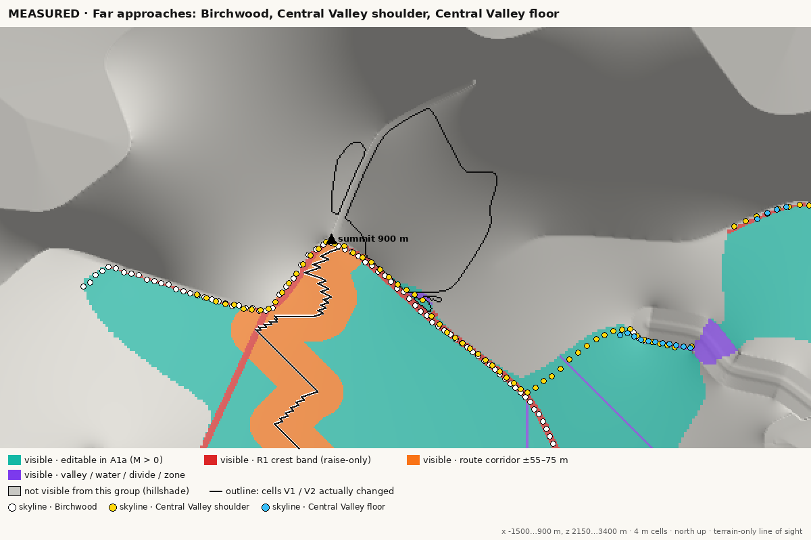
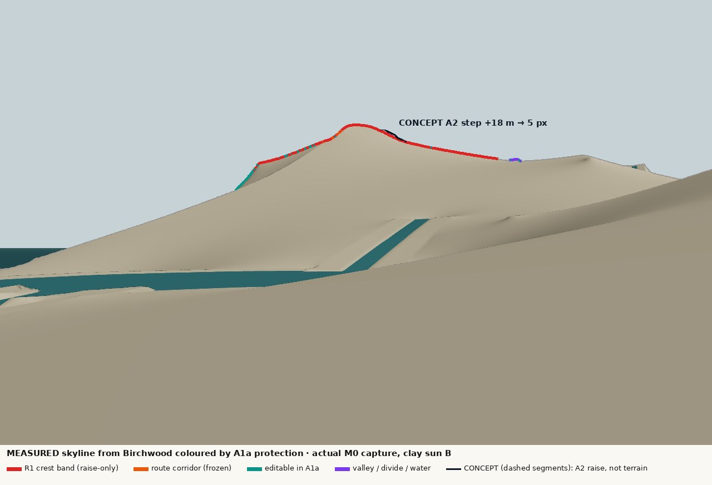
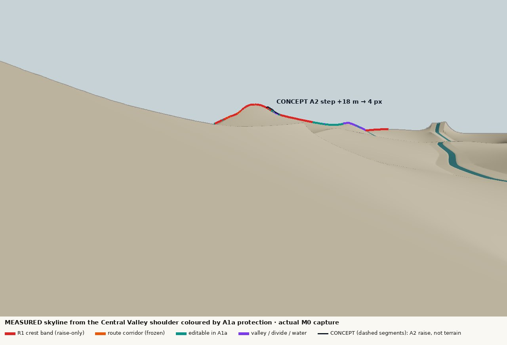
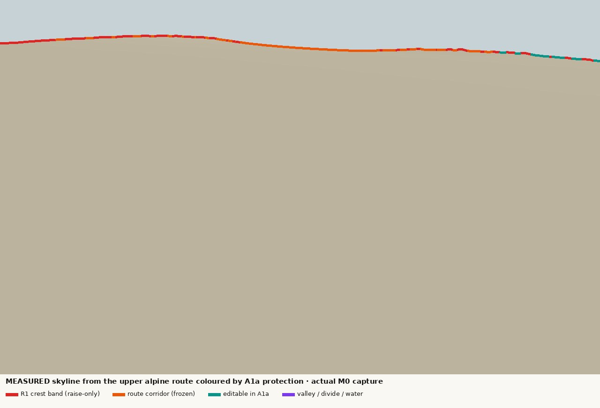
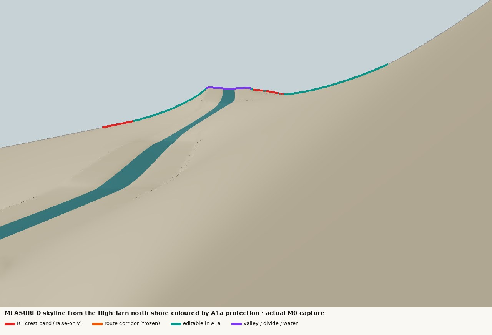
| Viewpoint | Skyline: crest | Corridor | Editable | Δh for 3 px | V1 shift | Corridor ±20 m frees |
|---|---|---|---|---|---|---|
| Birchwood | 81 % | 4 % | 10 % | 9.1 m | 0.00 px | 2.5 % sky · 13 % visible |
| Central Valley shoulder | 63 % | 3 % | 23 % | 10.8 m | 0.18 px | 1 % sky · 9 % visible |
| Central Valley floor | 27 % | 0 % | 20 % | 9.5 m | 0.00 px | 0 % |
| High Tarn overlook | 21 % | 5 % | 45 % | 2.3 m | 0.35 px | 4 % sky · 2 % visible |
| High Tarn north shore | 18 % | 2 % | 63 % | 2.6 m | 0.43 px | 2 % sky · 0 % visible |
| Route s 1300–2750 m | 30–68 % | 8–69 % | 0–23 % | 0.1–2.1 m | 0.00 px | 4–18 % sky · 15–32 % visible |
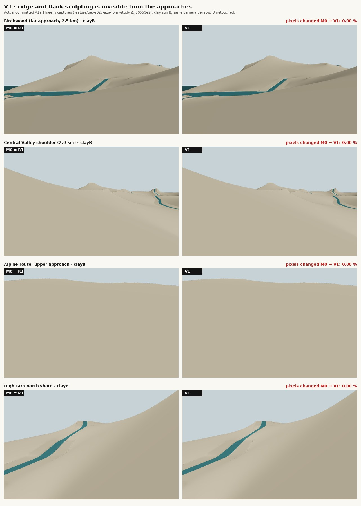
measuredThe east side has one broad hollow between A1 and A2, opening NE to the coast. It is a true valley only below about 650 m, where it is 45–124 m deep and about 500 m wide. A1a placed the C1 floor at 690–705 m, above the valley head on the planar face, where the hollow is 4–21 m deep. The bowl therefore showed a rim on three sides.
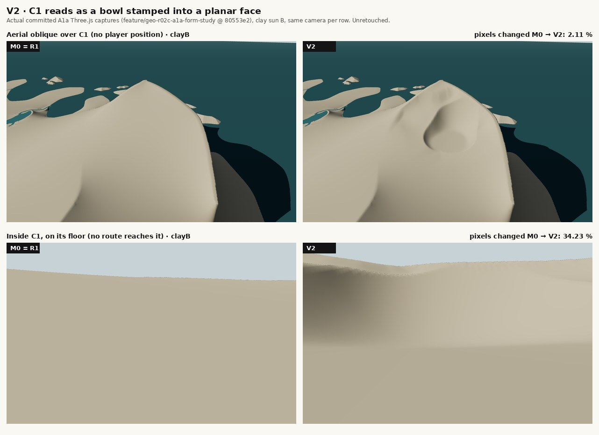
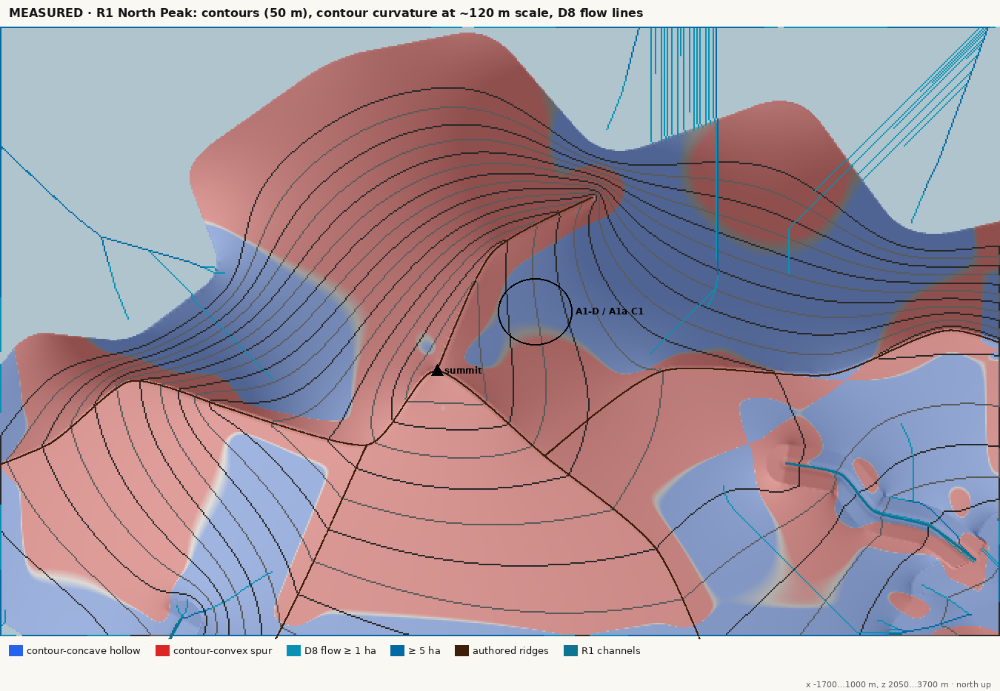
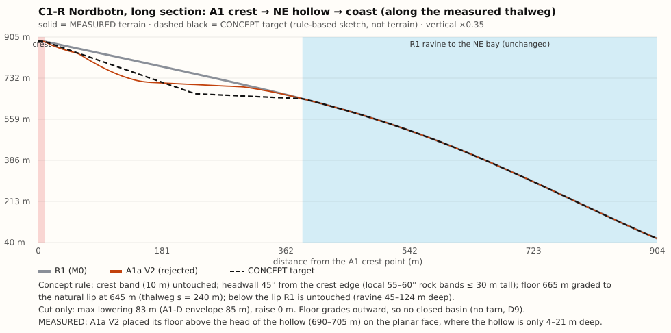
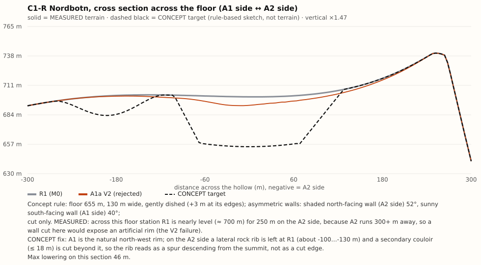
measuredThe hollow is 0 % visible from the far approaches and the route, and 0.3 % from High Tarn. Only the lower A1 crest at 760–790 m sees 43–51 % of it. The visible alternative, the tarn-side slope (52 % far, 41 % High Tarn), is planar and has no valley head.
proposalKeep C1 in the NE hollow, rebuilt as C1-R: the cirque sits at the true valley head, A1 forms its north-west wall, a lateral rib bounds it on the A2 side, and it drains through the existing ravine to the NE bay (R-D). It only pays off at player height once a lower-A1-crest overlook or path exists (R-E). Do not invent a valley head on the tarn side.
measuredEvery channel in the window has a frozen wet section of ±20 m, with R1's authored bench at about bed + 4 m beyond it. The ground there can be lowered by only 0–3 m before it would stop draining to the channel. With the bed fixed, a gully can only gain depth by raising its walls. V3 raised both banks, so the open bank became a mound. The serrated wall came from a 4 m fade on a rasterised wet edge. The 4 m grid itself is adequate for walls of 10 m or more.
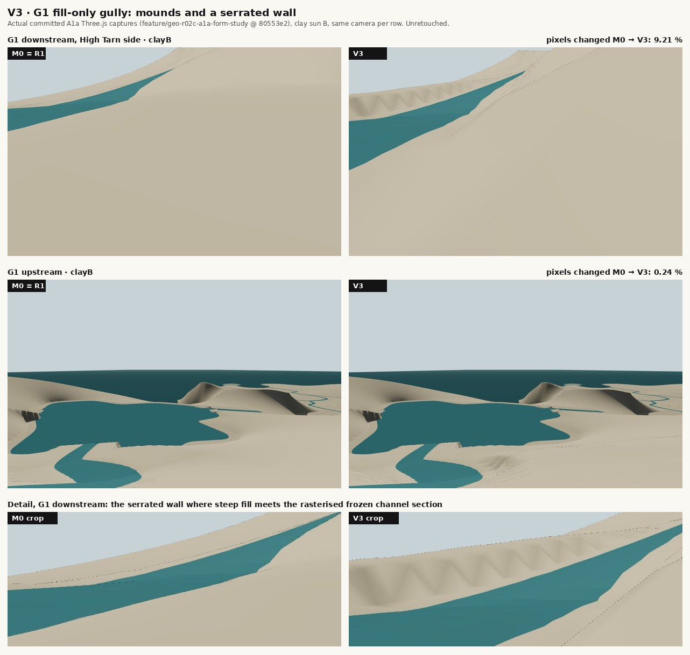
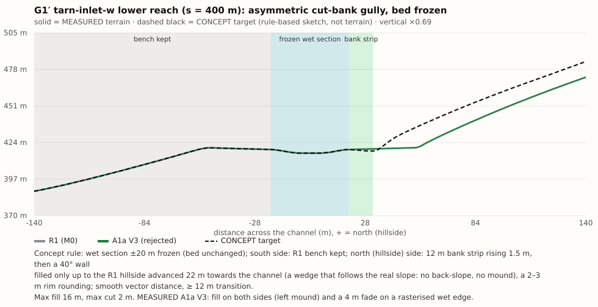
| Reach | Hillside relief | Open bank | Gradient | Visible far / High Tarn | Status |
|---|---|---|---|---|---|
| G1′ tarn-inlet-w s 296–472 m | 31–38 m | 4 m | 36 % | 0 % / 100 % | recommended (R-G) |
| A1a G1 tarn-inlet-w s 208–386 m | 33 m (median) | 4 m | — | 23 % / 100 % | rejected |
| G2 tarn-inlet-n s 270–376 m | ≈ 31 m | 4 m | 61 % | 64 % / 100 % | alternative (R-H, next to D3) |
| windward-gully | 60–93 m | 4 m | 30 % | 0 % / 0 % | coastal band, unseen |
concept over a measured base. Hatching marks every protection that stays. Teal (A1b-α) needs no new release; everything in orange, red or black needs one of the authorizations below.
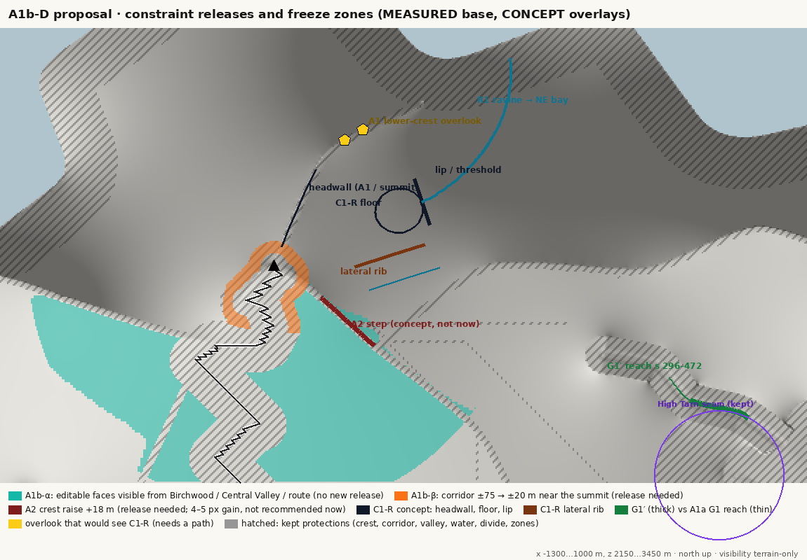
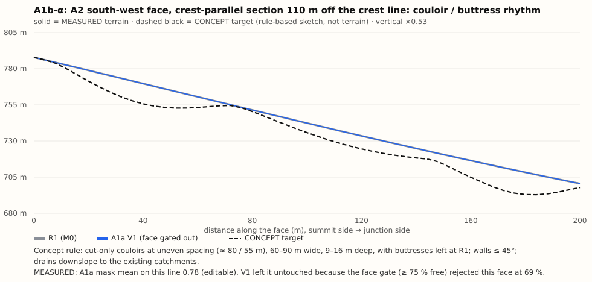
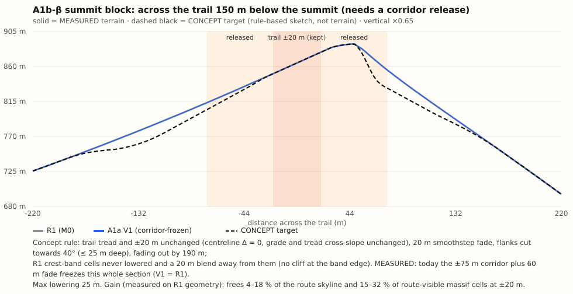
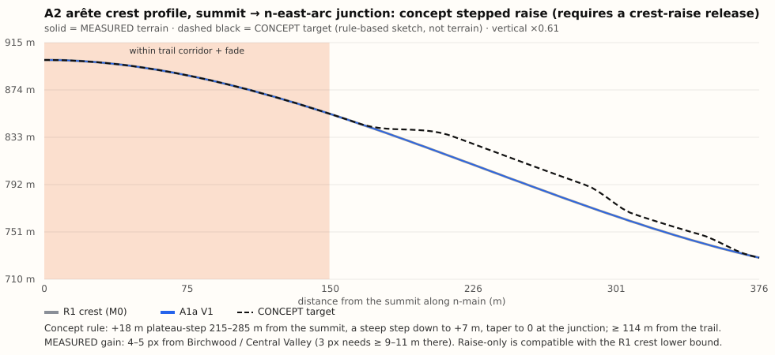
proposalRatings are design judgement. The measured basis is in data/decisions.json.
| Option | Visual gain | Hydrological risk | Complexity | Release |
|---|---|---|---|---|
| A1b-α visible face relief | medium; 31 ha of seen faces, skyline unchanged | low | low–medium | none |
| A1b-β α + summit block | high on the ascent, medium far | low; route risk handled by a gate | medium | R-A |
| A2 crest raise +18 m | low (4–5 px) | low | low | R-B |
| Design-master crest revision | high; the only route to a new far silhouette | high (re-solve) | high | R-C |
| C1-R valley-head cirque | high credibility; low from today's viewpoints | low–medium | high | R-D, R-E |
| Tarn-side cirque | high visibility; decorative risk | medium–high | high | R-F |
| G1′ tarn-inlet-w lower reach | low–medium, local | low–medium | medium | R-G |
| G2 tarn-inlet-n | medium | medium (D3) | medium | R-H |
Disclosed, not an authorization item: the face gate drops from 0.75 to 0.60 on the targeted faces only.
proposalPrioritise A, player-visible summit and faces. It tests the exact A1a failure, it has the highest impact where players stand, and it reuses the proven overlay, mask and validation. B cannot be judged at player height until a viewpoint exists. C is bed-locked and local.
# AURORA REST — GEO-R02C-A1b Player-Visible Summit and Face Study (implementation prompt, NOT executed)
> **Status, 23 Oct 2026:** kept as written for review. A1b-α was later approved as one limited experiment on the A2 south-west face, on its own branch. **B-β and R-A are not approved**, so the B-β section below is void.
Project: Aurora Rest · Repository: `Algolon/Aurora-Rest` · Art direction: *Believable Nature, Sculpted for Wonder.*
## Context you must read first
- A1a overlay platform and its rejected variants: branch `feature/geo-r02c-a1a-form-study` @ `80553e2d5af88fa16ea5ef3db6b0adcbd4b529c3` (`docs/geo-r02c-a1a/README.md`, `review.html`). The variants V1–V3 are immutable evidence; do not modify or delete them.
- A1b-D redesign dossier: visibility and protection maps, matched failure captures, concept sections, decisions. It is not committed yet; commit it as `docs/geo-r02c-a1b-d/` on the A1b branch as the first commit (scripts read the A1a checkpoint read-only; set `A1A_ROOT` to the repository root).
- Key measured facts this experiment answers to:
- V1–V3 changed **0.00 %** of pixels in the Birchwood, Central Valley shoulder, west-arm and route captures; V1 moved the North Peak skyline by **≤ 0.43 px** from every approach.
- Far skylines are **62–82 % R1 crest band** (lower bound, raise-only); route skylines are **30–69 % trail corridor**.
- **69–75 %** of the massif cells visible from the far approaches are editable in A1a, and V1 touched **none** of them: the face gate (≥ 75 % free) rejected the A2 south-west (69 %) and A3 south (70 %) faces, and the operator only sculpted north/east faces.
## Git
1. Verify `git remote -v` = `https://github.com/Algolon/Aurora-Rest`, a clean worktree, and that `origin/feature/geo-r02c-a1a-form-study` = `80553e2…`.
2. Create `feature/geo-r02c-a1b-visible-summit` from `80553e2` in a separate worktree. **This needs a one-time AGENTS.md exception (branch not based on `main`), which must be granted explicitly before you start.**
3. Do not change the R1, P0, A1-D or A1a branches. Do not modify `docs/geo-r02b/design-master-A-R1-v1.json`, the R1 generator or binaries, or any existing test. Do not merge, deploy or push without further authorization.
## Scope: two variants only (family A, player-visible summit and faces)
Start from M0 (= canonical R1, `fc8fd6da…`), not from V1. Re-prove empty-overlay parity first; if M0 ≠ R1 byte for byte, STOP.
**B-α — visible face relief, current protections (no new release).**
- Target cells = A1a-editable (M > 0) cells within 700 m of the summit that are visible (terrain-only line of sight, eye 1.75 m) from Birchwood, the Central Valley shoulder, the Central Valley floor or the peak-ascent route points s = 1300–2750 m. Reuse `docs/geo-r02c-a1b-d/scripts/visibility.py` to build this target mask deterministically.
- Faces: A2 south-west, A3 south (below the corridor), summit south face below the corridor. Face gate 0.75 → 0.60 for these targeted faces only; record the change.
- Operator: cut-only couloir / buttress rhythm across each face. Couloirs 60–90 m wide, 9–16 m deep, uneven spacing (about 55–80 m), oriented down the fall line and fading out 40 m before the crest band and before the valley floor. Buttresses stay at R1. Walls ≤ 45°. No noise.
- Expected: skyline unchanged (0 px); in-face relief visible from the approaches.
**B-β — B-α plus the summit block (only if release R-A is granted in writing).**
- Peak-ascent corridor within 450 m of the summit and above 780 m: ±75 m (+60 m fade) → ±20 m (+20 m smoothstep fade). Everywhere else the corridor is unchanged.
- Flanks outside ±20 m cut towards 40° (≤ 25 m), crest-band cells never lowered and blended over 20 m, fading out by 190 m from the trail (see `csec-summit-block`).
- Passability gate (fail = STOP): route centreline Δ = 0 m everywhere; grade unchanged; tread cross-slope within ±3 m unchanged (≤ 0.01 change); `walkRouteForTest('peak-ascent')` reaches the end with `blockedAt = -1`.
If R-A is not granted, deliver M0 and B-α only.
## Validation per variant (A1a suite, unchanged and not weakened)
Protected classes unchanged (except the R-A corridor change in B-β, reported cell by cell); outside the window byte-identical; crest ≥ bound; wet cells, lakes, beds and water surfaces unchanged; land/sea and coast 0–150 m unchanged; zero new dry sinks; zero D8 drainage-destination changes; route centrelines Δ = 0; determinism (two runs, identical SHA-256); `npm test` and `npm run build` pass; default viewer path pixel-identical (8/8 R1 views).
## Evidence (metrics are supplemental)
- Real Three.js captures, clay sun A/B and standard, for M0 / B-α / B-β: all 16 A1a cameras plus 4 new walk cameras on the peak-ascent route at s = 2300, 2500, 2650 and 2800 m, each looking at the summit block and at the A2 south-west face.
- For every view: pixel change against M0 (|Δ| > 12 after a 3 × 3 median, as in `pixel_diff.py`). Visibility gate: B-α must change ≥ 1 % of frame pixels in at least two of Birchwood, Central Valley shoulder, approach-upper and the new route cameras; otherwise report "not visible" and STOP before any further tuning.
- Matched sections: `csec-a2-face`, `csec-summit-block` re-measured on the generated terrain, with the concept targets dashed.
- Review page comparing M0 / B-α / B-β side by side, with the A1a V1 captures as the "before" reference.
## Stop conditions
Parity fails; frozen terrain changes outside the declared release; a new sink; any bed, lake or water-surface change; a drainage-destination change; the passability gate fails; a design-master edit becomes necessary; only noise or masking would make it acceptable; the visibility gate fails. Preserve a diagnostic checkpoint and report; do not force acceptance.
## Out of scope
C1-R, any cirque, G1′/G2, crest raises, A2 route, Cairn col, coast, vegetation and assets, deployment.
STOP after presenting M0 / B-α / (B-β) for independent artistic and technical review.